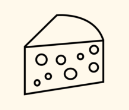
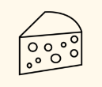

Serveringsforslag
 

Gryderet
Ost
Sanddal Porter kan nydes til kraftige retter eller smagfulde oste.
| Type: | Baltisk porter |
| Alkohol pct.: | 8,7% |
| IBU: | 21,9 |
| Oprindelse: | Fredericia, Danmark |
| Bryggeri: | Fredericia Brewpub |
| Ingredienser: | Vand, bygmalt, byg, humle |